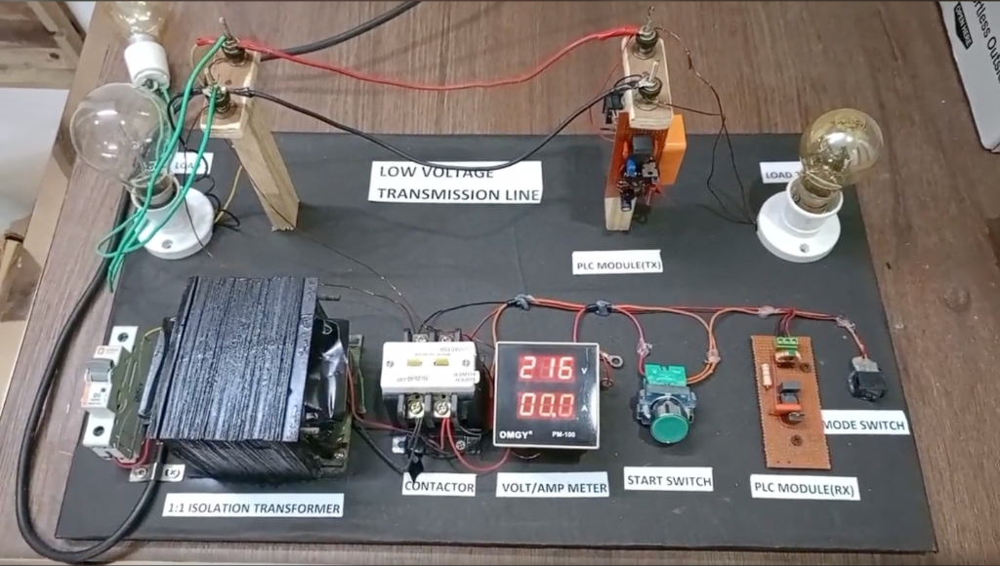
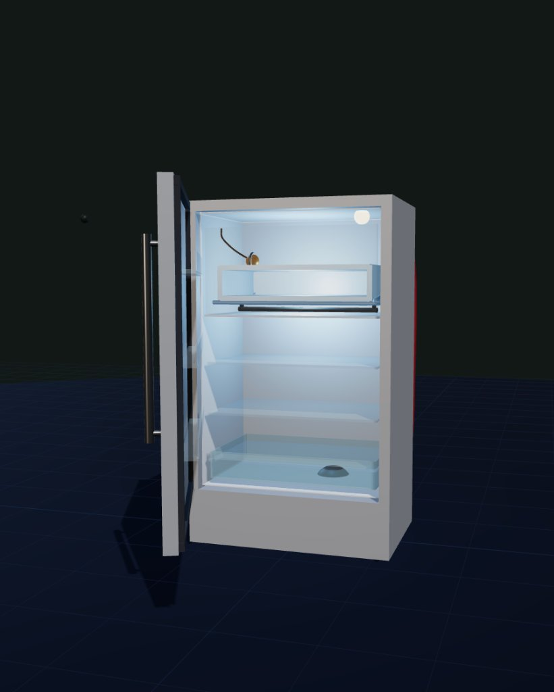

Arsh Satsangi
Electrical Engineering undergraduate focused on VLSI, embedded systems, and analog circuit design. I build hardware systems from RTL to working prototypes, including a 32-bit CORDIC processor and smart power-line fault detection systems.
About Me
Engineering practical hardware solutions from bit-level RTL synthesis to physical analog circuitry.
I am a 3rd-year Electrical Engineering student at Dayalbagh Educational Institute (DEI), Agra, specializing in Electronics. My work centers on building mathematically verified, hardware-efficient systems — spanning multiplier-less digital arithmetic in Verilog to resonant carrier fault localization across AC distribution grids.
My background combines academic circuit theory with industrial exposure: from synthesizing placed-and-routed CORDIC silicon layouts in Xilinx Vivado to testing high-voltage power transformers under IS/IEC standards during my internship at MEI Power Private Limited (MARSONS Group).
Top Engineering Projects
Result-oriented hardware architectures: custom silicon, resonant analog safety, and 3D digital twins.
32-bit Multiplier-Less CORDIC Processor in Silicon
cordic_sincos.v) supporting −π to +π.

WireGuard: Smart Detection of Power Line Failures

Virtual Refrigeration & AC Lab (3D WebGL Digital Twin)

Additional Engineering Works
Secondary implementations spanning microgrid optimization, autonomous ground robotics, and industrial IoT.
MicroGrid Simulator | Smart Energy Scheduler
Physics-based residential microgrid digital twin built for International Hackathon 2026. Integrates 3,548 hourly renewable records with battery state-of-charge constraints (88% efficiency, C/4 rate) and Time-of-Use tariff arbitrage to benchmark dispatch policies.
Road Condition Survey Bot
Autonomous ground rover surveying transport pavement. Combines 3-axis accelerometer and ultrasonic distance profiling to detect potholes, cracks, and road roughness, logging spatial metrics for civic maintenance.
OptiPress Industrial IIoT (Arduino Opta)
Industrial Internet of Things solution built on the micro-PLC Arduino Opta for heavy-duty compressors. Monitors pressure cycles, current transients, and temperature gradients to predict component failure before downtime occurs.
Interactive Hardware Laboratory
Hands-on browser emulators of hardware systems engineered from scratch: test the 32-bit CORDIC arithmetic pipeline or observe resonant line failure detection on the analog oscilloscope.
CORDIC Angle Rotation Core
Computes sine and cosine using only shifts and additions via a 16-stage vector rotation pipeline with a 16-entry arctangent LUT.
| Stage | Direction di | Xi (Cos) | Yi (Sin) | Zi (Rem.) | αi (LUT) |
|---|
WireGuard Line Fault & Resonance
Analog line break detection through unique pole resonant frequencies along low-voltage distribution lines.
Industrial Engineering Experience
Practical application of high-voltage electrical standards, transformer manufacturing, and quality verification.
- › Assisted in the design, precision assembly, and rigorous testing of heavy-duty power and distribution transformers.
- › Verified critical electrical parameters against Indian Standards (IS) and International Electrotechnical Commission (IEC) quality and energy-efficiency frameworks.
- › Gained intensive hands-on workshop exposure to magnetic core lamination, high-voltage winding techniques, insulation resistance measurements, and dielectric oil breakdown testing under senior power engineers.
Technical Skills Arsenal
A disciplined foundation combining hardware description, circuit simulation, laboratory instrumentation, and embedded systems.
Honors & Proof of Impact
Competitive international rankings, research convention selections, and academic awards.
HackSecure X International Hackathon
Ranked Top 11 among 250+ international teams in a high-stakes hardware cybersecurity challenge, engineering secure firmware and reverse-engineering embedded logic.
IEEE DEI Cybersecurity Quiz
Secured 1st place in the IEEE DEI Cybersecurity Quiz among 100+ participating engineering students, demonstrating rapid technical recall in systems security and hardware architecture.
Anveshan National Student Research Convention
Selected to represent Dayalbagh Educational Institute at the prestigious North Zone Anveshan Student Research Convention for innovative engineering research.
DEI Virtual Labs National Hackathon
Top 20 National Finalist among 200+ engineering teams, developing high-fidelity interactive simulation software for engineering lab education.
Initiate Collaboration
Seeking a core engineering internship in VLSI design, embedded systems, or analog hardware prototyping. Let’s discuss architecture, circuit design, and hardware implementation.